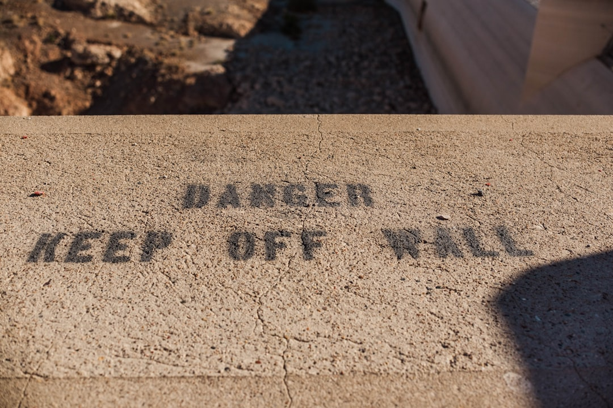

A useful retaining wall brief starts with measurable scope, not a metre rate alone. The published guide compares 7 wall systems, outlines 8 state and territory pathways, and uses 3 planning bands, low, typical and high. Its calculator works from wall-face area, wall system, access, slope, removal, drainage and professional allowance inputs, including optional allowance bands of A$1,200 to A$3,500 or A$3,000 to A$8,000 for complex projects.
For homeowners comparing retaining wall quotes, the practical task is to turn a rough wall idea into a brief that explains the site, material, access and approval questions clearly.
Retaining Wall Quotes Explained
Retaining Wall Quotes is best read as a planning reference before direct contractor conversations. The published form asks for suburb or postcode, project type, material preference, contact details and whether site photos are ready for follow-up.
A quote-ready brief should describe the wall by wall-face area, not only by length. The calculator asks for wall length and average retained height, then adjusts the planning range for material, access, slope, removal, drainage and professional allowances. Two walls with the same length can still involve different preparation, drainage and design questions.
- Measure the wall length and estimate the average retained height.
- Note whether machine access is good, limited, or difficult.
- Record whether the site is gentle, moderate, steep or constrained.
- Separate a new wall, a replacement and a repair assessment.
- Keep site photos ready for follow-up.
What Contractors Need to Price Consistently
The main comparison problem is uneven scope. One contractor may include drainage, removal and professional input while another leaves them as assumptions. The guide points readers toward a quote planning hub, quote checklist, inclusions checker and contractor selection material, all useful when several prices need to be compared on the same basis.
Before asking for numbers, write down what the quote should include. For a replacement, ask whether demolition and disposal are included. For a repair or assessment, ask what visible problem the contractor is inspecting. For a new wall, ask whether the proposed system, base preparation, drainage allowance and finish are included.
For Brisbane readers, the related guide on retaining wall pricing in Brisbane sits beside the national planning material. Use city guides to frame local questions, then confirm property-specific requirements before relying on any planning figure.
Material Choice Changes More Than Appearance
The guide compares concrete sleeper, cast-in-situ concrete, timber, block and brick, stone and sandstone, gabion, and rock or boulder systems. Treat that list as a decision path, not a style gallery. The better question is which system suits access, slope, retained height, drainage design and the level of finish expected for the property.
Concrete sleeper and post-and-panel systems are presented as one option, while poured concrete involves formwork, reinforcement, placement and finish. Timber raises durability and replacement planning questions. Block and brick involve masonry, base and reinforcement. Stone, sandstone, gabion, rock and boulder systems each depend heavily on material selection, machine access, footprint and placement.
Ask contractors to state the proposed wall system plainly. If the quote names a material without explaining base work, drainage or access assumptions, it is harder to compare against another price. A cheaper-looking option may only look cheaper because the brief has left out work another contractor included.
Approvals, Engineering and Boundary Questions
The published material gives engineering, approvals, boundary walls and neighbour issues their own planning area. That split is useful because retaining work may involve design and approval questions as well as construction cost. A homeowner may need to confirm whether engineering advice, drainage treatment or neighbour discussions apply to the property.
Do not assume one national answer covers every site. The guide organises location pathways by state and territory, then points readers toward state and city guides. Use those pathways as prompts for questions, not as a substitute for property-specific confirmation.
- Ask whether wall height, load, slope or boundary position changes the design requirement.
- Ask who is responsible for confirming the relevant approval pathway.
- Ask whether drainage is included in the quoted scope or only allowed for generally.
- Ask how neighbour or boundary matters are handled before work is booked.
Who This Applies To
This guide is most useful for homeowners, renovators and property owners who are still shaping the brief. It also suits people replacing an existing wall, comparing wall systems, or checking whether a repair assessment is enough before committing to construction.
It is less useful if a structural design has already been completed and the remaining task is procurement against a fixed specification. In that case, the comparison should focus on whether each contractor is pricing the same drawings, drainage details, access limits and exclusions.
For early planning, use the calculator as a range-finding tool. The guide states that the output is planning information only, not a quote or structural assessment, and that soil, loads, drainage, access, design, approvals and scope can materially change the result.
- Measure the wall. Record length and average retained height so the project can be discussed by wall-face area.
- Describe the site. Note access, slope, removal needs, drainage questions and whether the wall is new, replacement or repair.
- Choose material candidates. Shortlist systems from the seven categories before asking contractors to explain suitability.
- Check approval questions. Use the relevant state or territory pathway as a prompt for engineering, boundary and drainage questions.
- Compare inclusions. Read each response against the same checklist before treating one price as better value.
| Item | Planning request | Quote-ready brief |
|---|---|---|
| Wall size | Rough length or photo | Length plus average retained height |
| Material | Unsure or preferred look | Shortlist of suitable wall systems |
| Site conditions | General description | Access, slope, removal and drainage notes |
| Professional input | Not considered | Question about engineering and approval allowance |
| Comparison value | Indicative range | Contractors pricing the same scope |
Common questions
What information helps a contractor price a retaining wall? Length, average retained height, wall system, access, slope, removal, drainage and professional allowance questions all help. The calculator uses those inputs to build an indicative planning range.
Is the calculator result a formal quote? No. The guide says its result is planning information only, not a quote or structural assessment, and that soil, loads, drainage, access, design, approvals and scope can materially change the result.
Which retaining wall material is best? The published material does not name one universal best option. It compares seven systems and encourages selection by site fit, access, drainage, base work, finish and replacement planning.
Should approval questions be checked before requesting prices? Yes, they should be raised early. The guide separates engineering, approvals, boundary walls and neighbours because those issues can affect scope before a contractor can price clearly.
This guide covers planning inputs, material choices, approval questions and quote comparison for retaining wall projects in Australia.